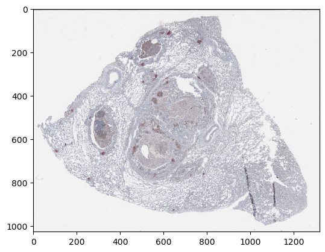
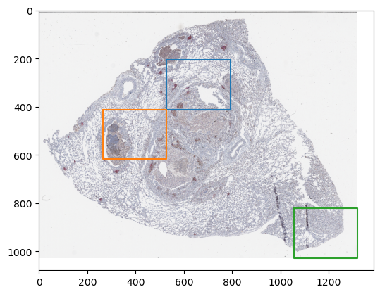
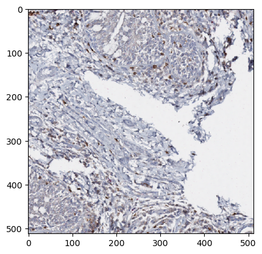
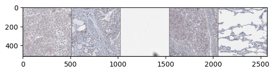

Loading patches/windows from masked regions of images with ZarrDataset
Import the “zarrdataset” package
import zarrdataset as zds
import zarr
C:\Users\cervaf\Documents\Apps\miniconda3\envs\zds-dev\lib\site-packages\tqdm\auto.py:21: TqdmWarning: IProgress not found. Please update jupyter and ipywidgets. See https://ipywidgets.readthedocs.io/en/stable/user_install.html
from .autonotebook import tqdm as notebook_tqdm
Load data stored on S3 storage
# These are images from the Image Data Resource (IDR)
# https://idr.openmicroscopy.org/ that are publicly available and were
# converted to the OME-NGFF (Zarr) format by the OME group. More examples
# can be found at Public OME-Zarr data (Nov. 2020)
# https://www.openmicroscopy.org/2020/11/04/zarr-data.html
filenames = ["https://uk1s3.embassy.ebi.ac.uk/idr/zarr/v0.4/idr0073A/9798462.zarr"]
import random
import numpy as np
# For reproducibility
np.random.seed(478963)
random.seed(478965)
z_img = zarr.open(filenames[0], mode="r")
z_img["0"].info
| Name | /0 |
|---|---|
| Type | zarr.core.Array |
| Data type | uint8 |
| Shape | (1, 3, 1, 16433, 21115) |
| Chunk shape | (1, 1, 1, 1024, 1024) |
| Order | C |
| Read-only | True |
| Compressor | Blosc(cname='lz4', clevel=5, shuffle=SHUFFLE, blocksize=0) |
| Store type | zarr.storage.FSStore |
| No. bytes | 1040948385 (992.7M) |
| Chunks initialized | 0/1071 |
import matplotlib.pyplot as plt
plt.imshow(np.moveaxis(z_img["4"][0, :, 0], 0, -1))
plt.show()

Define a mask from where patches will be extracted
mask = np.array([
[0, 0, 0, 0, 0],
[0, 0, 1, 0, 0],
[0, 1, 0, 0, 0],
[0, 0, 0, 0, 0],
[0, 0, 0, 0, 1],
], dtype=bool)
ZarrDataset will match the size of the mask t the size of the image that is being sampled.
For that reason, it is not necessary for the mask to be of the same size of the image.
_, d, _, h, w = z_img["4"].shape
m_h, m_w = mask.shape
factor_h = h / m_h
factor_w = w / m_w
plt.imshow(np.moveaxis(z_img["4"][0, :, 0], 0, -1))
sampling_region = np.array([
[0, 0],
[0, factor_w],
[factor_h, factor_w],
[factor_h, 0],
[0, 0]
])
for m_y, m_x in zip(*np.nonzero(mask)):
offset_y = m_y * factor_h
offset_x = m_x * factor_w
plt.plot(sampling_region[:, 1] + offset_x,
sampling_region[:, 0] + offset_y)
plt.show()

Extract patches of size 512x512 pixels from masked regiosn of a Whole Slide Image (WSI)
Sample the image uniformly in a squared grid pattern using a PatchSampler
patch_size = dict(Y=512, X=512)
patch_sampler = zds.PatchSampler(patch_size=patch_size)
Use the ZarrDataset class to enable extraction of samples from masked regions by specifying two modalities: images, and masks.
Enable sampling patched from random locations with shuffle=True
image_specs = zds.ImagesDatasetSpecs(
filenames=filenames,
data_group="0",
source_axes="TCZYX",
)
# Use the MasksDatasetSpecs to add the specifications of the masks.
# Filenames can receive different types of variables, in this case a list with a single mask for the only image in image_specs.
masks_specs = zds.MasksDatasetSpecs(
filenames=[mask],
source_axes="YX",
)
my_dataset = zds.ZarrDataset([image_specs, masks_specs],
patch_sampler=patch_sampler,
draw_same_chunk=False,
shuffle=True)
ds_iterator = iter(my_dataset)
sample = next(ds_iterator)
type(sample), sample.shape, sample.dtype
C:\Users\cervaf\Documents\Apps\miniconda3\envs\zds-dev\lib\site-packages\boto3\compat.py:82: PythonDeprecationWarning: Boto3 will no longer support Python 3.7 starting December 13, 2023. To continue receiving service updates, bug fixes, and security updates please upgrade to Python 3.8 or later. More information can be found here: https://aws.amazon.com/blogs/developer/python-support-policy-updates-for-aws-sdks-and-tools/
warnings.warn(warning, PythonDeprecationWarning)
(numpy.ndarray, (1, 3, 1, 512, 512), dtype('uint8'))
plt.imshow(np.moveaxis(sample[0, :, 0], 0, -1))
plt.show()

samples = []
for i, sample in enumerate(my_dataset):
samples.append(np.pad(np.moveaxis(sample[0, :, 0], 0, -1),((1, 1), (1, 1), (0, 0))))
# Obtain only 5 samples
if i >= 4:
break
grid_samples = np.hstack(samples)
plt.imshow(grid_samples)
plt.show()
